实验 8 补充：四格划分抽样审查
数据：exp8s batch34 的逐像素格标签（interim/<划分>/<图>.npz），与 batch30 像素底座的真值、检测器 0.5 掩码。
不训练，不重跑任何模型。生成时已逐像素核对：按下列定义重算的格标签与 batch34 完全一致。
定义：真值目标为 objects.gt_label（SECOND 按两期语义转移拆）；检测器覆盖目标像素 < 10% 为无信号；
漏检连通域为目标内 GT & ~pred 的 8 连通域（≥ 20 像素）；连通域外扩 1 像素（3×3）后与检测器掩码相交为贴边。
① 无信号·贴边 ② 无信号·孤立 ③ 有信号·贴边 ④ 有信号·孤立（真值目标连通，按构造为空）；
不足 20 像素的连通域或面积 < 20 的目标为 ⑤ 残余。
每行从左到右：T1、T2、真值（白色为该目标，灰色为其他真值）、检测器预测、格标签叠加图（底图 T2）、整图小图（黄框为裁块）。
裁块以该目标为中心，边长取目标外接框长边的 1.5 倍（至少 64 像素），放大为整数倍。
叠加图图例：该漏检连通域所属真值目标其余部分（细轮廓）检测器 0.5 掩码（半透明）连通域外扩 1 像素后与掩码的接触处其他真值目标（灰色细轮廓）
SECOND 测试
抽样种子 20261024；连通域总数 ① 3284、② 11675、③ 28812、④ 0、⑤ 64200。
①：随机 8 个连通域（候选 3284 个，抽 8 个）
test_1030.png① 无信号·贴边目标面积 394 px · 连通域面积 394 px · 检测器覆盖率 0.0%（0 px） · 贴边 是（接触 1 px） · 语义转移 building → non-vegetated surface · 裁块 y=262 x=146 边长 84，放大 2×
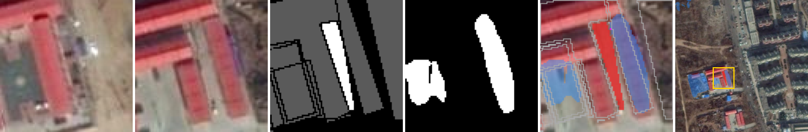
test_1236.png① 无信号·贴边目标面积 655 px · 连通域面积 617 px · 检测器覆盖率 5.8%（38 px） · 贴边 是（接触 36 px） · 语义转移 non-vegetated surface → low vegetation · 裁块 y=64 x=38 边长 85，放大 2×
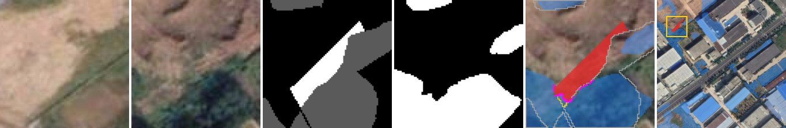
test_1575.png① 无信号·贴边目标面积 3065 px · 连通域面积 2765 px · 检测器覆盖率 9.8%（300 px） · 贴边 是（接触 85 px） · 语义转移 non-vegetated surface → building · 裁块 y=307 x=307 边长 205，放大 1×
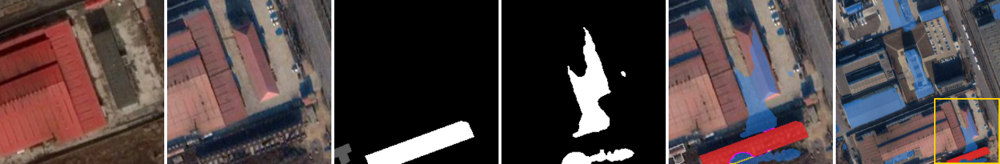
test_251.png① 无信号·贴边目标面积 33717 px · 连通域面积 2976 px · 检测器覆盖率 9.7%（3274 px） · 贴边 是（接触 110 px） · 语义转移 non-vegetated surface → low vegetation · 裁块 y=124 x=14 边长 388，放大 1×
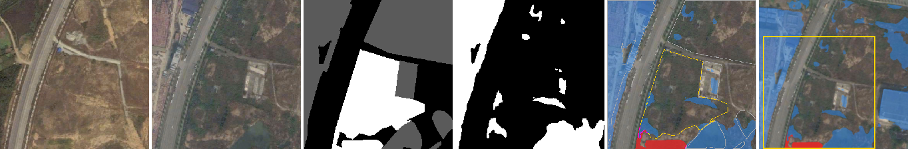
test_339.png① 无信号·贴边目标面积 16324 px · 连通域面积 15938 px · 检测器覆盖率 2.4%（386 px） · 贴边 是（接触 261 px） · 语义转移 tree → low vegetation · 裁块 y=0 x=0 边长 512，放大 1×
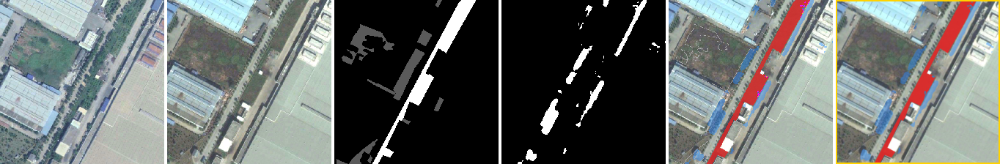
test_543.png① 无信号·贴边目标面积 535 px · 连通域面积 526 px · 检测器覆盖率 1.7%（9 px） · 贴边 是（接触 22 px） · 语义转移 non-vegetated surface → low vegetation · 裁块 y=413 x=124 边长 84，放大 2×
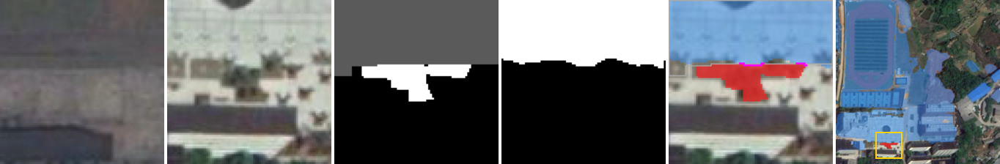
test_629.png① 无信号·贴边目标面积 626 px · 连通域面积 565 px · 检测器覆盖率 9.7%（61 px） · 贴边 是（接触 51 px） · 语义转移 building → building · 裁块 y=212 x=30 边长 64，放大 3×
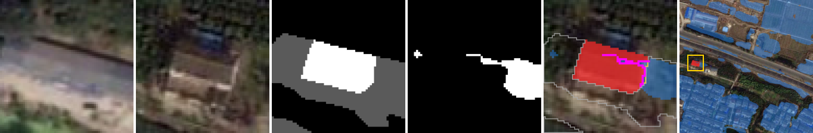
test_661.png① 无信号·贴边目标面积 1573 px · 连通域面积 1526 px · 检测器覆盖率 3.0%（47 px） · 贴边 是（接触 79 px） · 语义转移 low vegetation → non-vegetated surface · 裁块 y=302 x=44 边长 210，放大 1×
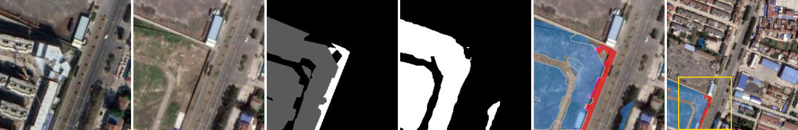
②：随机 8 个连通域（候选 11675 个，抽 8 个）
test_1115.png② 无信号·孤立目标面积 394 px · 连通域面积 394 px · 检测器覆盖率 0.0%（0 px） · 贴边 否（接触 0 px） · 语义转移 building → building · 裁块 y=258 x=26 边长 64，放大 3×
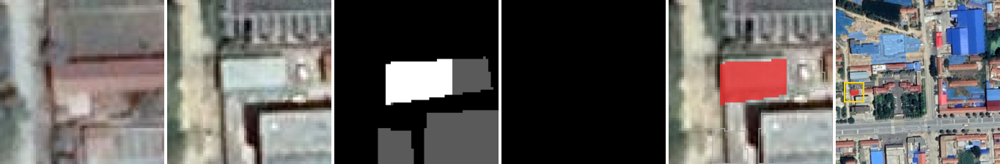
test_1515.png② 无信号·孤立目标面积 248 px · 连通域面积 248 px · 检测器覆盖率 0.0%（0 px） · 贴边 否（接触 0 px） · 语义转移 non-vegetated surface → building · 裁块 y=10 x=448 边长 64，放大 3×
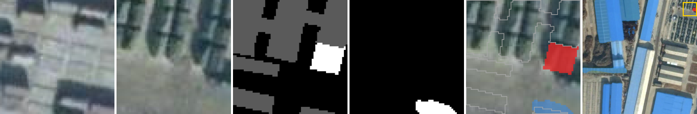
test_1646.png② 无信号·孤立目标面积 85 px · 连通域面积 85 px · 检测器覆盖率 0.0%（0 px） · 贴边 否（接触 0 px） · 语义转移 non-vegetated surface → building · 裁块 y=214 x=130 边长 64，放大 3×
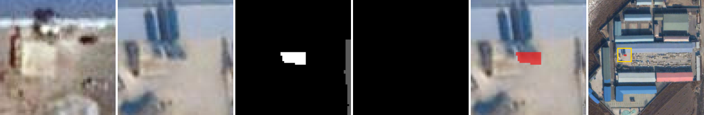
test_187.png② 无信号·孤立目标面积 25 px · 连通域面积 25 px · 检测器覆盖率 0.0%（0 px） · 贴边 否（接触 0 px） · 语义转移 low vegetation → non-vegetated surface · 裁块 y=94 x=329 边长 64，放大 3×
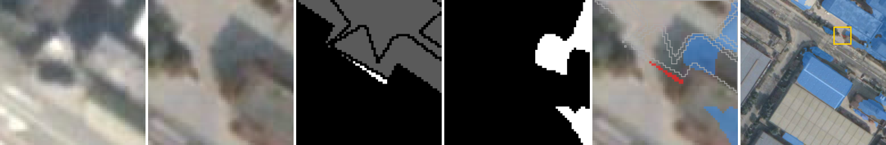
test_581.png② 无信号·孤立目标面积 154 px · 连通域面积 154 px · 检测器覆盖率 0.0%（0 px） · 贴边 否（接触 0 px） · 语义转移 non-vegetated surface → building · 裁块 y=38 x=318 边长 64，放大 3×
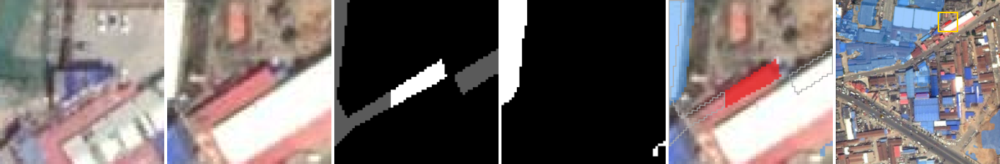
test_816.png② 无信号·孤立目标面积 219 px · 连通域面积 219 px · 检测器覆盖率 0.0%（0 px） · 贴边 否（接触 0 px） · 语义转移 building → non-vegetated surface · 裁块 y=329 x=0 边长 64，放大 3×
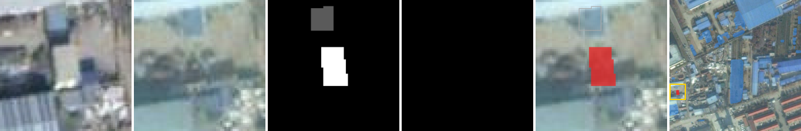
test_82.png② 无信号·孤立目标面积 179 px · 连通域面积 179 px · 检测器覆盖率 0.0%（0 px） · 贴边 否（接触 0 px） · 语义转移 tree → low vegetation · 裁块 y=90 x=177 边长 64，放大 3×
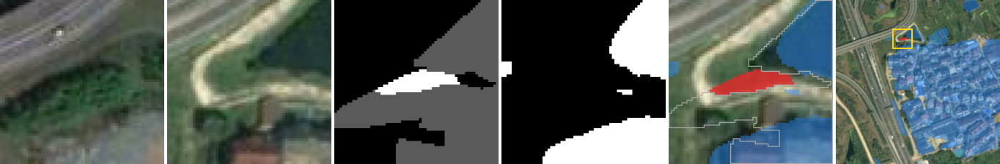
test_981.png② 无信号·孤立目标面积 861 px · 连通域面积 861 px · 检测器覆盖率 0.0%（0 px） · 贴边 否（接触 0 px） · 语义转移 low vegetation → non-vegetated surface · 裁块 y=175 x=307 边长 99，放大 2×
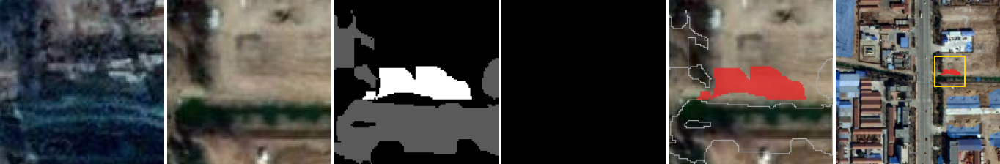
③：随机 8 个连通域（候选 28812 个，抽 8 个）
test_1364.png③ 有信号·贴边目标面积 1218 px · 连通域面积 238 px · 检测器覆盖率 55.9%（681 px） · 贴边 是（接触 86 px） · 语义转移 non-vegetated surface → low vegetation · 裁块 y=34 x=128 边长 73，放大 3×
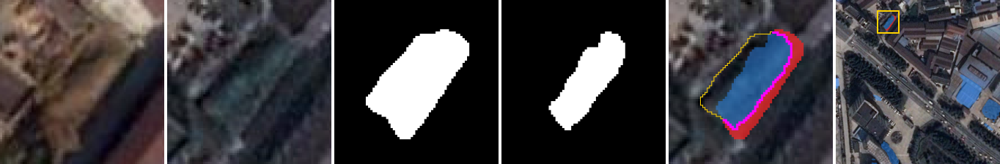
test_380.png③ 有信号·贴边目标面积 26956 px · 连通域面积 125 px · 检测器覆盖率 89.4%（24106 px） · 贴边 是（接触 74 px） · 语义转移 low vegetation → non-vegetated surface · 裁块 y=0 x=10 边长 316，放大 1×
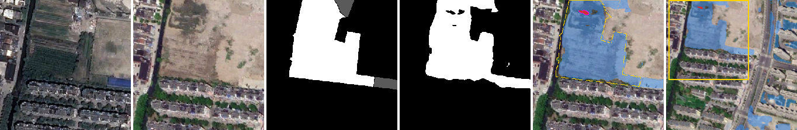
test_449.png③ 有信号·贴边目标面积 828 px · 连通域面积 626 px · 检测器覆盖率 24.4%（202 px） · 贴边 是（接触 149 px） · 语义转移 tree → non-vegetated surface · 裁块 y=91 x=232 边长 190，放大 1×
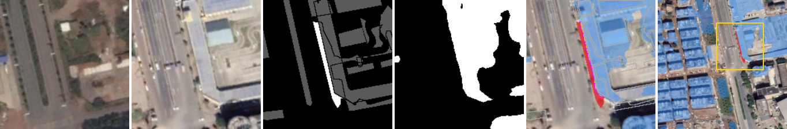
test_550.png③ 有信号·贴边目标面积 1639 px · 连通域面积 234 px · 检测器覆盖率 81.6%（1338 px） · 贴边 是（接触 67 px） · 语义转移 non-vegetated surface → low vegetation · 裁块 y=0 x=0 边长 163，放大 1×
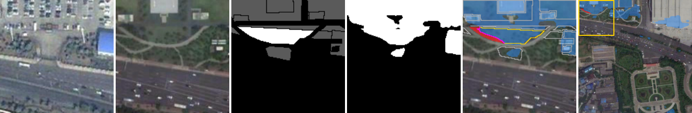
test_603.png③ 有信号·贴边目标面积 797 px · 连通域面积 342 px · 检测器覆盖率 42.8%（341 px） · 贴边 是（接触 26 px） · 语义转移 non-vegetated surface → building · 裁块 y=137 x=0 边长 94，放大 2×
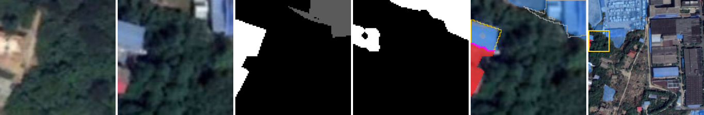
test_637.png③ 有信号·贴边目标面积 1093 px · 连通域面积 40 px · 检测器覆盖率 96.3%（1053 px） · 贴边 是（接触 20 px） · 语义转移 building → non-vegetated surface · 裁块 y=178 x=298 边长 121，放大 1×
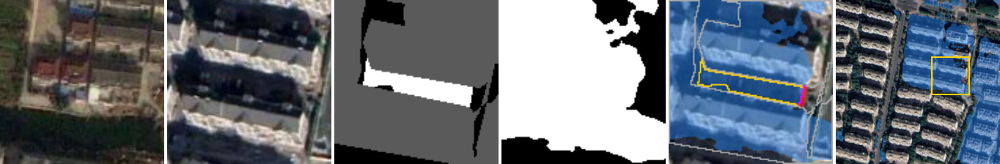
test_672.png③ 有信号·贴边目标面积 11796 px · 连通域面积 41 px · 检测器覆盖率 97.7%（11525 px） · 贴边 是（接触 31 px） · 语义转移 non-vegetated surface → building · 裁块 y=194 x=301 边长 211，放大 1×
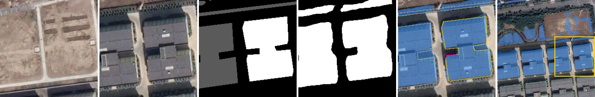
test_917.png③ 有信号·贴边目标面积 2055 px · 连通域面积 41 px · 检测器覆盖率 97.5%（2004 px） · 贴边 是（接触 23 px） · 语义转移 low vegetation → building · 裁块 y=168 x=271 边长 241，放大 1×
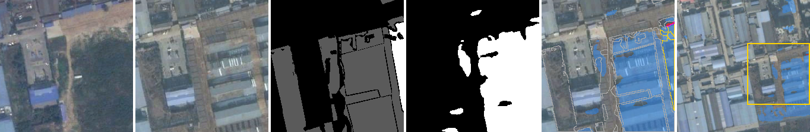
③ 补抽：检测器覆盖率 10–30% 的目标（每目标一个 ③ 连通域）（候选 2310 个，抽 4 个）
test_1243.png③ 有信号·贴边目标面积 438 px · 连通域面积 385 px · 检测器覆盖率 12.1%（53 px） · 贴边 是（接触 40 px） · 语义转移 building → non-vegetated surface · 裁块 y=242 x=24 边长 66，放大 3×
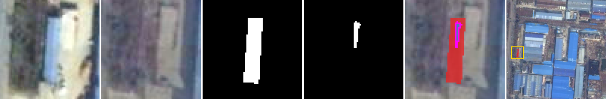
test_125.png③ 有信号·贴边目标面积 343 px · 连通域面积 251 px · 检测器覆盖率 26.8%（92 px） · 贴边 是（接触 8 px） · 语义转移 non-vegetated surface → tree · 裁块 y=0 x=427 边长 85，放大 2×
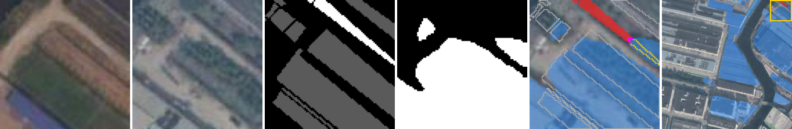
test_205.png③ 有信号·贴边目标面积 6444 px · 连通域面积 5422 px · 检测器覆盖率 15.9%（1022 px） · 贴边 是（接触 376 px） · 语义转移 non-vegetated surface → building · 裁块 y=72 x=162 边长 195，放大 1×
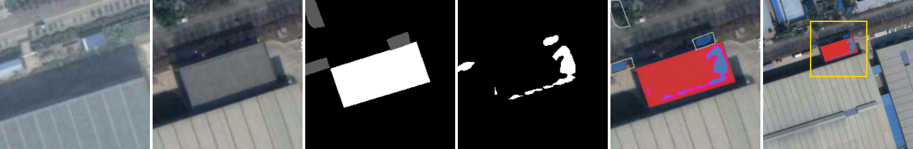
test_550.png③ 有信号·贴边目标面积 291 px · 连通域面积 216 px · 检测器覆盖率 23.7%（69 px） · 贴边 是（接触 35 px） · 语义转移 building → low vegetation · 裁块 y=448 x=284 边长 64，放大 3×
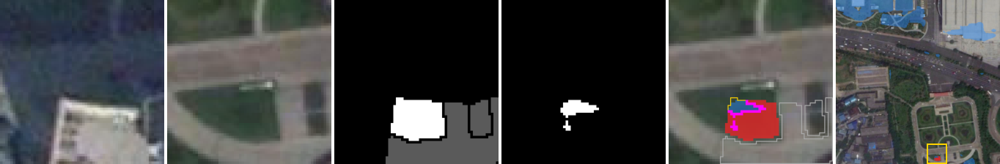
① 补抽：目标内覆盖为 0，只从外沿碰到检测器掩码（候选 688 个，抽 4 个）
test_1045.png① 无信号·贴边目标面积 366 px · 连通域面积 366 px · 检测器覆盖率 0.0%（0 px） · 贴边 是（接触 22 px） · 语义转移 non-vegetated surface → low vegetation · 裁块 y=194 x=188 边长 75，放大 2×
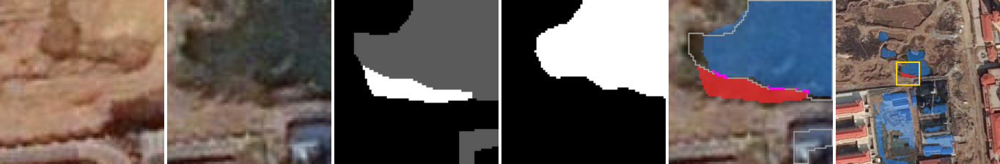
test_176.png① 无信号·贴边目标面积 71 px · 连通域面积 71 px · 检测器覆盖率 0.0%（0 px） · 贴边 是（接触 2 px） · 语义转移 tree → low vegetation · 裁块 y=196 x=230 边长 64，放大 3×
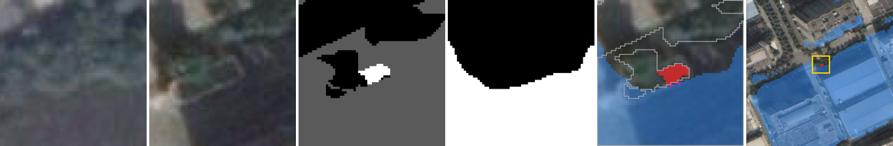
test_636.png① 无信号·贴边目标面积 692 px · 连通域面积 692 px · 检测器覆盖率 0.0%（0 px） · 贴边 是（接触 4 px） · 语义转移 tree → non-vegetated surface · 裁块 y=400 x=59 边长 112，放大 2×
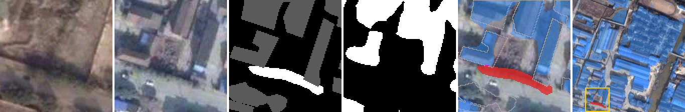
test_739.png① 无信号·贴边目标面积 259 px · 连通域面积 259 px · 检测器覆盖率 0.0%（0 px） · 贴边 是（接触 2 px） · 语义转移 building → building · 裁块 y=124 x=410 边长 64，放大 3×
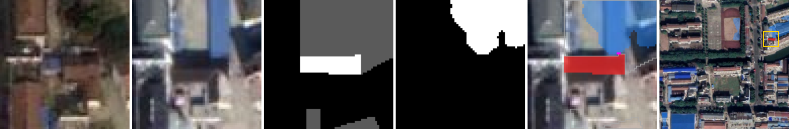
⑤ 残余：随机 4 个连通域（候选 64169 个，抽 4 个）
test_1133.png⑤ 残余目标面积 2925 px · 连通域面积 10 px · 检测器覆盖率 91.3%（2671 px） · 贴边 是（接触 10 px） · 语义转移 non-vegetated surface → building · 裁块 y=144 x=255 边长 99，放大 2×
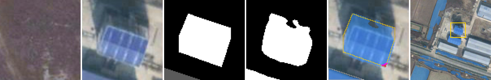
test_1408.png⑤ 残余目标面积 1 px · 连通域面积 1 px · 检测器覆盖率 0.0%（0 px） · 贴边 否（接触 0 px） · 语义转移 non-vegetated surface → low vegetation · 裁块 y=448 x=262 边长 64，放大 3×
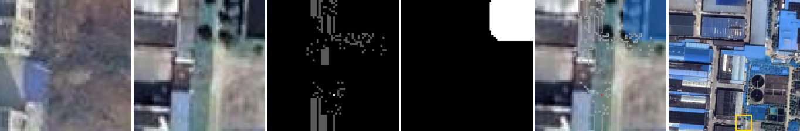
test_1674.png⑤ 残余目标面积 3162 px · 连通域面积 1 px · 检测器覆盖率 92.4%（2921 px） · 贴边 是（接触 4 px） · 语义转移 non-vegetated surface → tree · 裁块 y=0 x=112 边长 192，放大 1×
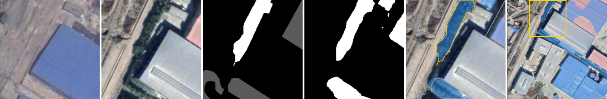
test_689.png⑤ 残余目标面积 9825 px · 连通域面积 3 px · 检测器覆盖率 98.8%（9707 px） · 贴边 是（接触 6 px） · 语义转移 non-vegetated surface → building · 裁块 y=183 x=267 边长 190，放大 1×
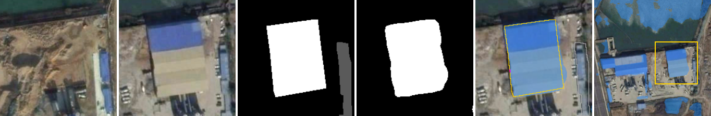
SYSU-CD 测试
抽样种子 20261025；连通域总数 ① 154、② 909、③ 7579、④ 0、⑤ 8593。
①：随机 8 个连通域（候选 154 个，抽 8 个）
test_1506.png① 无信号·贴边目标面积 1576 px · 连通域面积 1564 px · 检测器覆盖率 0.8%（12 px） · 贴边 是（接触 9 px） · 裁块 y=0 x=133 边长 123，放大 1×
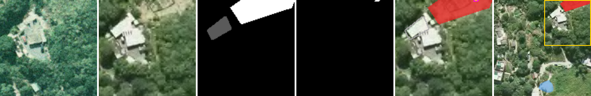
test_1564.png① 无信号·贴边目标面积 9703 px · 连通域面积 9695 px · 检测器覆盖率 0.1%（8 px） · 贴边 是（接触 9 px） · 裁块 y=0 x=0 边长 256，放大 1×
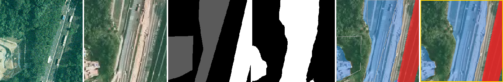
test_1681.png① 无信号·贴边目标面积 654 px · 连通域面积 642 px · 检测器覆盖率 1.8%（12 px） · 贴边 是（接触 12 px） · 裁块 y=186 x=0 边长 70，放大 3×
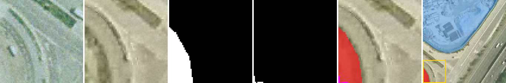
test_211.png① 无信号·贴边目标面积 1898 px · 连通域面积 1808 px · 检测器覆盖率 4.7%（90 px） · 贴边 是（接触 60 px） · 裁块 y=100 x=28 边长 156，放大 1×
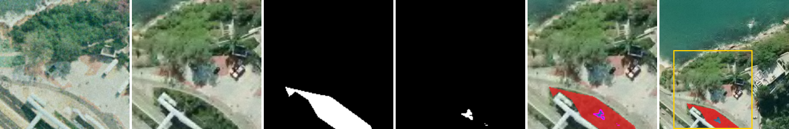
test_3351.png① 无信号·贴边目标面积 1012 px · 连通域面积 1002 px · 检测器覆盖率 1.0%（10 px） · 贴边 是（接触 9 px） · 裁块 y=186 x=186 边长 70，放大 3×
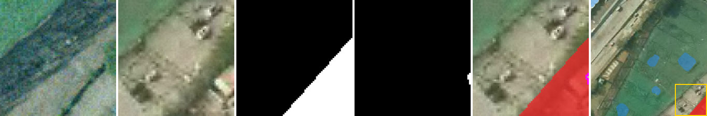
test_3432.png① 无信号·贴边目标面积 7603 px · 连通域面积 7539 px · 检测器覆盖率 0.8%（64 px） · 贴边 是（接触 36 px） · 裁块 y=0 x=0 边长 256，放大 1×
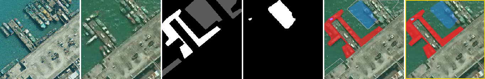
test_3687.png① 无信号·贴边目标面积 23149 px · 连通域面积 23105 px · 检测器覆盖率 0.2%（44 px） · 贴边 是（接触 59 px） · 裁块 y=0 x=0 边长 256，放大 1×
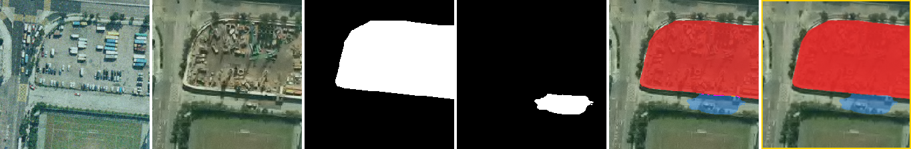
test_911.png① 无信号·贴边目标面积 1087 px · 连通域面积 1063 px · 检测器覆盖率 2.2%（24 px） · 贴边 是（接触 18 px） · 裁块 y=0 x=0 边长 124，放大 1×
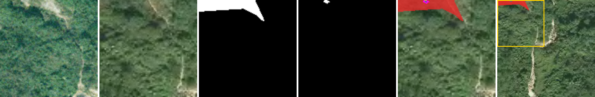
②：随机 8 个连通域（候选 909 个，抽 8 个）
test_1182.png② 无信号·孤立目标面积 435 px · 连通域面积 435 px · 检测器覆盖率 0.0%（0 px） · 贴边 否（接触 0 px） · 裁块 y=192 x=192 边长 64，放大 3×
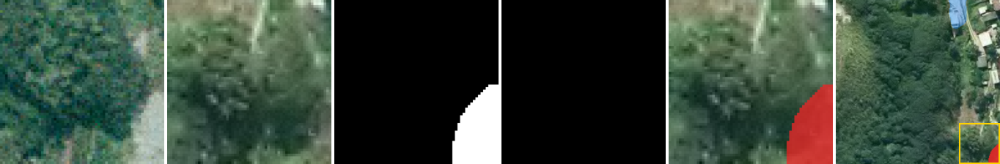
test_3246.png② 无信号·孤立目标面积 498 px · 连通域面积 498 px · 检测器覆盖率 0.0%（0 px） · 贴边 否（接触 0 px） · 裁块 y=186 x=186 边长 70，放大 3×
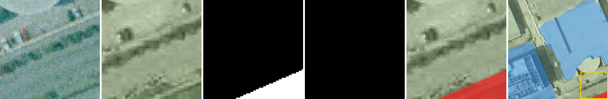
test_3371.png② 无信号·孤立目标面积 162 px · 连通域面积 162 px · 检测器覆盖率 0.0%（0 px） · 贴边 否（接触 0 px） · 裁块 y=192 x=0 边长 64，放大 3×
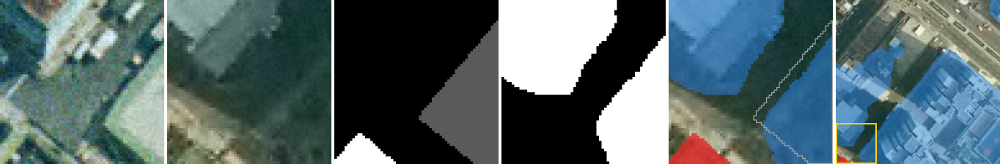
test_3691.png② 无信号·孤立目标面积 360 px · 连通域面积 360 px · 检测器覆盖率 0.0%（0 px） · 贴边 否（接触 0 px） · 裁块 y=0 x=0 边长 64，放大 3×
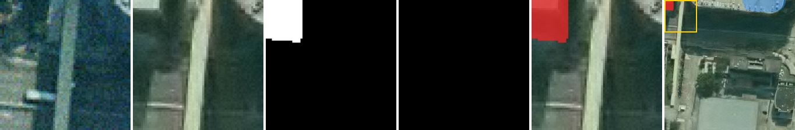
test_5.png② 无信号·孤立目标面积 1534 px · 连通域面积 1534 px · 检测器覆盖率 0.0%（0 px） · 贴边 否（接触 0 px） · 裁块 y=0 x=0 边长 72，放大 3×
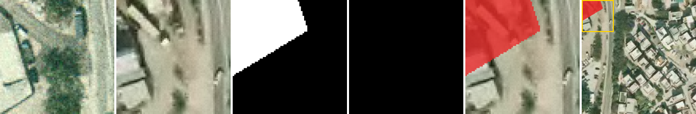
test_572.png② 无信号·孤立目标面积 1972 px · 连通域面积 1972 px · 检测器覆盖率 0.0%（0 px） · 贴边 否（接触 0 px） · 裁块 y=0 x=159 边长 97，放大 2×
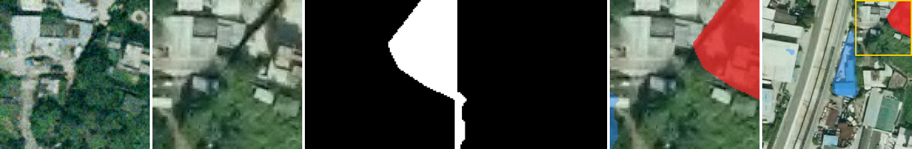
test_690.png② 无信号·孤立目标面积 138 px · 连通域面积 138 px · 检测器覆盖率 0.0%（0 px） · 贴边 否（接触 0 px） · 裁块 y=6 x=0 边长 64，放大 3×
test_981.png② 无信号·孤立目标面积 6686 px · 连通域面积 6686 px · 检测器覆盖率 0.0%（0 px） · 贴边 否（接触 0 px） · 裁块 y=108 x=108 边长 148，放大 1×
③：随机 8 个连通域（候选 7579 个，抽 8 个）
test_1698.png③ 有信号·贴边目标面积 60441 px · 连通域面积 54 px · 检测器覆盖率 97.3%（58787 px） · 贴边 是（接触 44 px） · 裁块 y=0 x=0 边长 256，放大 1×
test_2068.png③ 有信号·贴边目标面积 3823 px · 连通域面积 669 px · 检测器覆盖率 81.1%（3100 px） · 贴边 是（接触 47 px） · 裁块 y=102 x=0 边长 154，放大 1×
test_3001.png③ 有信号·贴边目标面积 845 px · 连通域面积 75 px · 检测器覆盖率 91.1%（770 px） · 贴边 是（接触 59 px） · 裁块 y=88 x=59 边长 70，放大 3×
test_3588.png③ 有信号·贴边目标面积 595 px · 连通域面积 121 px · 检测器覆盖率 79.3%（472 px） · 贴边 是（接触 13 px） · 裁块 y=163 x=39 边长 93，放大 2×
test_514.png③ 有信号·贴边目标面积 11132 px · 连通域面积 6085 px · 检测器覆盖率 45.3%（5044 px） · 贴边 是（接触 264 px） · 裁块 y=0 x=0 边长 244，放大 1×
test_558.png③ 有信号·贴边目标面积 548 px · 连通域面积 353 px · 检测器覆盖率 34.7%（190 px） · 贴边 是（接触 38 px） · 裁块 y=0 x=169 边长 64，放大 3×
test_691.png③ 有信号·贴边目标面积 3947 px · 连通域面积 435 px · 检测器覆盖率 68.5%（2705 px） · 贴边 是（接触 64 px） · 裁块 y=97 x=132 边长 124，放大 1×
test_828.png③ 有信号·贴边目标面积 5813 px · 连通域面积 41 px · 检测器覆盖率 98.9%（5749 px） · 贴边 是（接触 23 px） · 裁块 y=96 x=96 边长 160，放大 1×
③ 补抽：检测器覆盖率 10–30% 的目标（每目标一个 ③ 连通域）（候选 212 个，抽 4 个）
test_2361.png③ 有信号·贴边目标面积 2245 px · 连通域面积 1930 px · 检测器覆盖率 14.0%（315 px） · 贴边 是（接触 78 px） · 裁块 y=0 x=0 边长 94，放大 2×
test_3752.png③ 有信号·贴边目标面积 3455 px · 连通域面积 2613 px · 检测器覆盖率 24.4%（842 px） · 贴边 是（接触 75 px） · 裁块 y=0 x=112 边长 144，放大 1×
test_3894.png③ 有信号·贴边目标面积 6185 px · 连通域面积 5506 px · 检测器覆盖率 11.0%（679 px） · 贴边 是（接触 150 px） · 裁块 y=36 x=115 边长 141，放大 1×
test_507.png③ 有信号·贴边目标面积 17042 px · 连通域面积 2110 px · 检测器覆盖率 18.0%（3063 px） · 贴边 是（接触 148 px） · 裁块 y=0 x=0 边长 256，放大 1×
① 补抽：目标内覆盖为 0，只从外沿碰到检测器掩码（候选 6 个，抽 4 个）
test_2348.png① 无信号·贴边目标面积 47 px · 连通域面积 47 px · 检测器覆盖率 0.0%（0 px） · 贴边 是（接触 6 px） · 裁块 y=192 x=0 边长 64，放大 3×
test_3718.png① 无信号·贴边目标面积 371 px · 连通域面积 371 px · 检测器覆盖率 0.0%（0 px） · 贴边 是（接触 11 px） · 裁块 y=38 x=0 边长 64，放大 3×
test_3718.png① 无信号·贴边目标面积 342 px · 连通域面积 342 px · 检测器覆盖率 0.0%（0 px） · 贴边 是（接触 3 px） · 裁块 y=67 x=0 边长 64，放大 3×
test_791.png① 无信号·贴边目标面积 139 px · 连通域面积 139 px · 检测器覆盖率 0.0%（0 px） · 贴边 是（接触 4 px） · 裁块 y=192 x=192 边长 64，放大 3×
⑤ 残余：随机 4 个连通域（候选 8581 个，抽 4 个）
test_1050.png⑤ 残余目标面积 46530 px · 连通域面积 2 px · 检测器覆盖率 97.7%（45456 px） · 贴边 是（接触 5 px） · 裁块 y=0 x=0 边长 256，放大 1×
test_2138.png⑤ 残余目标面积 8853 px · 连通域面积 1 px · 检测器覆盖率 92.6%（8194 px） · 贴边 是（接触 4 px） · 裁块 y=0 x=0 边长 256，放大 1×
test_2424.png⑤ 残余目标面积 789 px · 连通域面积 10 px · 检测器覆盖率 92.8%（732 px） · 贴边 是（接触 8 px） · 裁块 y=0 x=190 边长 66，放大 3×
test_2782.png⑤ 残余目标面积 3059 px · 连通域面积 6 px · 检测器覆盖率 46.5%（1423 px） · 贴边 是（接触 10 px） · 裁块 y=58 x=58 边长 198，放大 1×